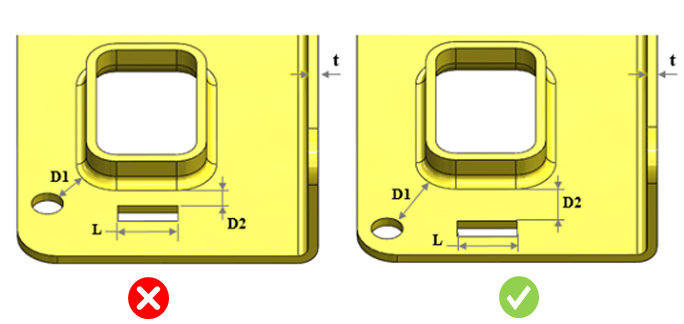
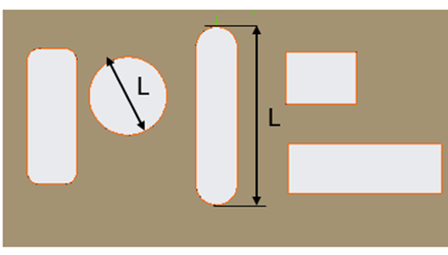

押し出し成形（エクストルード）形状と穴／スロット間の距離は、ユーザー指定値に従っている必要があります。
外観上の変形や損傷などの問題を回避するため、押し出し成形（エクストルード）形状と穴／スロット間の推奨最小距離を維持する必要があります。
押し出し成形（エクストルード）形状と穴の距離を板厚で割った比は、2.0 以上である必要があります。
押し出し成形（エクストルード）形状とスロットの距離を板厚で割った比（スロット長さに基づく）は、ユーザー指定値以上である必要があります。
DFMPro はパーツ上のフォーム形状および穴／スロットを識別し、それぞれの距離を構成値と照合して検証します。スロットの場合、DFMPro はまずスロットの長さを算出し、次に構成された長さの値に基づいてフォーム形状とスロット間の距離を相関付けます。これにより、解析用に検証が行われます。
ユーザーは、デフォルトで構成されている値を変更できます。

ここでは、
D1 = 押し出し成形（エクストルード）形状と穴の最小距離
D2 = 押し出し成形（エクストルード）形状とスロットの最小距離
L = スロット長さ
t = 板厚
ユーザーは、Import ボタンを使用して、Excel シートテンプレートに含まれる一括データをインポートできます。
標準テンプレート形式：
L1/t |
L2/t |
D2/t |
0 |
10 |
1 |
10 |
25 |
2 |
25 |
|
2.5 |
ここでは、
L1/t および L2/t = スロット長さと板厚の比の範囲
注記：
面取り付きのカットアウトもサポートされています。
次の標準スロット形状がサポートされています。

ここでは、
L = カットアウトの長さ